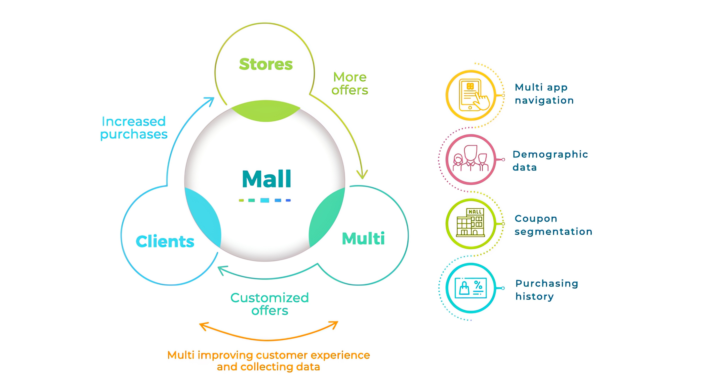

Recommendation Engine for Retail Coupons

To boost app usage and increase coupon redemptions in a shopping mall super app, I developed a machine learning recommendation engine to deliver personalized coupon offers. By integrating online and offline customer data, including browsing history, activated coupons, demographics, and shopping preferences, the model analyzed over 200 offers across categories such as leisure, fashion, and services to predict the most relevant deals for each user.
The recommendation engine powered a personalized coupon window on the app’s home screen and triggered targeted push notifications. Post-deployment, coupon views increased by 50%, click-through rates doubled, and message open rates improved by over 100%. Participating tenants saw a 50% boost in customer traffic, with tens of thousands of redemptions driving additional mall visits.
You can read more about this analysis in the Investor Relations report this project was showcased in the Earnings Release 3Q21 (p. 14), 4Q21 (p. 20), 3Q22 (p. 10), 4Q22 (p. 12) [direct link to the PDF].